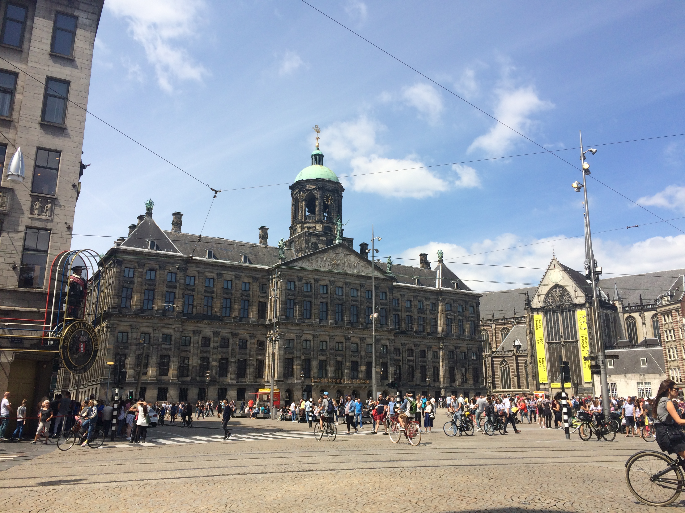
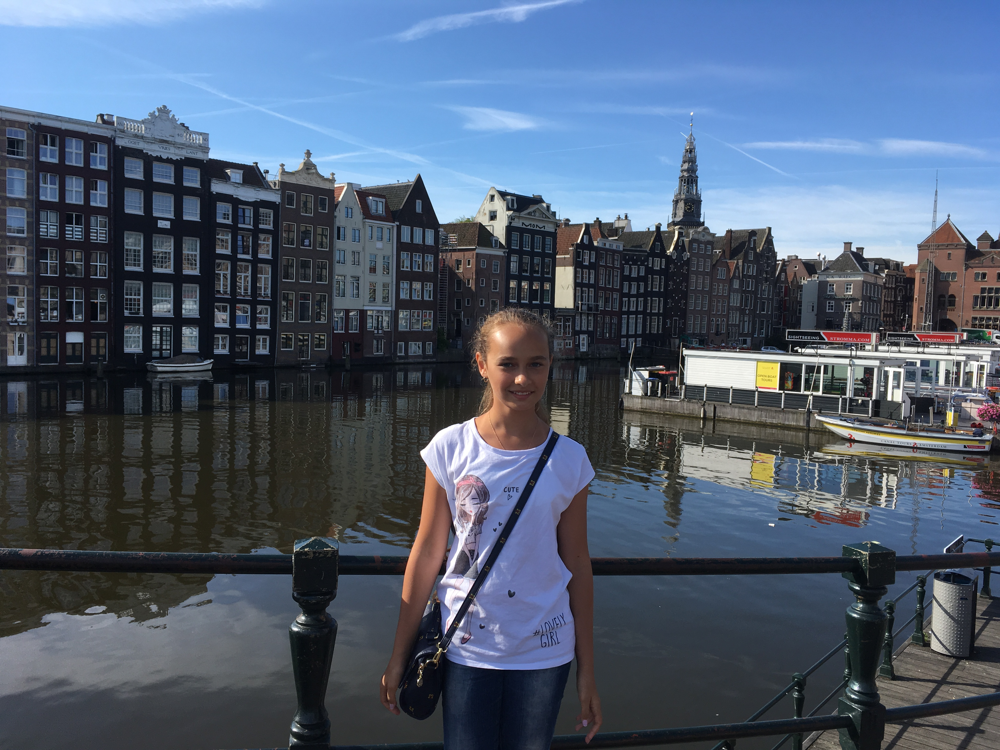

|

|
АМСТЕРДАМ - Нідерланди — невеличка країна, що знаходиться в західній Європі на березі Північного моря. Нідерланди часто називають «Голландією», але Голландія — це лише 2 з 12 провінцій Нідерландів. Це найбільш суперечлива і ліберальна країна Європи і світу. Тут гармонійно уживаються прекрасна архітектура, мистецтво, процвітаюча економіка і легкі наркотики, вільне кохання та безліч релігій різних народів.
Амстердам - офіційна столиця Нідерландів, однак фактичною столицею є Гаага, де розташовані королівська резиденція. Велосипеди, казкові будиночки, смачні сири, тюльпани, легалізовані наркотики це все про Амстердам.
Це місто каналів, прямо на них розташовується безліч старовинних горбатих мостів і вузеньких будиночків. Майже всі жителі Амстердама їздять на велосипедах, і це дуже цікаво, але треба бути дуже обережним, місцеві не дуже дивляться, куди їдуть, через що можна легко потрапити їм під колеса. Площа Дам - центральна площа Амстердама, на якій розташовані знамениті будівлі і проводяться численні заходи. Дуже цікавий музей нідерландського живописця Вінсента ван Гога. Мені також дуже сподобався музей Мадам Тюссо - другий за величиною музей Амстердама. Тут можна побачити Чарлі Чапліна, Мерилін Монро, Девіда Бекхема, Джорджа Клуні, принцесу Діану - і десятки інших воскових фігур знаменитостей.
|

|